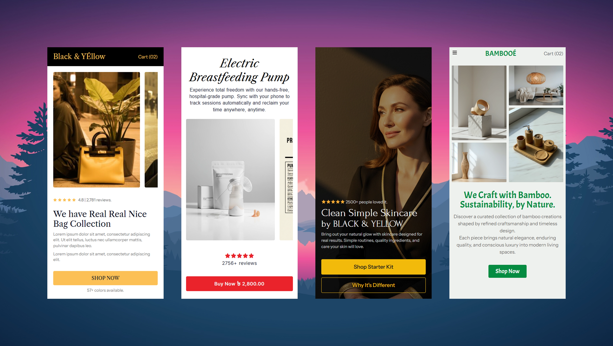

Button & Link Text Hover Effects Resource Guide
Complete technical guide and code snippets for building high-contrast, zero-layout-shift button and link hover states in modern web design systems.

1. Design System & Interaction Tokens
Interactive elements in our design system catalog rely on smooth CSS color transitions paired with coordinated SVG arrow stroke changes. Resting links use `--color_B_60`, smoothly shifting to `--color_B` when focused or hovered.
By avoiding arbitrary letter shifts or font-weight transformations on hover, buttons and links achieve crisp visual feedback with zero layout reflow across light and dark system themes.

2. Semantic HTML Markup Structure
To guarantee full screen-reader accessibility and responsive alignment, link and button text is paired with an inline vector arrow SVG icon.
<!-- Primary Action Button / Link -->
<a href="contact/" class="cta_button txt">
<svg class="arrow_icon" viewBox="0 0 24 24" fill="none" xmlns="http://www.w3.org/2000/svg">
<path d="M7 17L17 7M17 7H8M17 7V16"></path>
</svg>
<span>Let's Talk</span>
</a>
<!-- Secondary CTA Button Variant -->
<a href="works/" class="cta_button_alt cta_button txt">
<svg class="arrow_icon" viewBox="0 0 24 24" fill="none" xmlns="http://www.w3.org/2000/svg">
<path d="M7 17L17 7M17 7H8M17 7V16"></path>
</svg>
<span>View Case Studies</span>
</a>3. Production CSS Code Snippets
The CSS rule set coordinates typography color shifting and SVG stroke color transitions using a standard `.35s ease` timing function.
/* Base CTA Button Container */
.cta_button {
background: var(--color_0);
border: none;
outline: none;
cursor: pointer;
color: var(--color_B_60);
line-height: 1em;
display: flex;
align-items: center;
gap: 0px;
transition: color .35s ease;
font-family: 'Inter', sans-serif;
}
/* Integrated Arrow SVG Icon */
.arrow_icon {
width: 18px;
height: 18px;
stroke: var(--color_B_60);
stroke-width: 2;
stroke-linecap: round;
stroke-linejoin: round;
transition: stroke .35s ease, transform .28s var(--ease);
}
/* Coordinated Hover States */
.cta_button:hover {
color: var(--color_B);
}
.cta_button:hover .arrow_icon {
stroke: var(--color_B);
}
4. Implementation Guidelines & Best Practices
Key principles when deploying button and link hover effects across UI components:
- Use `.cta_button` for standard interactive links and buttons requiring arrow directional feedback.
- Apply `.cta_button_alt` alongside `.cta_button` when a prominent dark resting state (`--color_B_80`) is required.
- Maintain consistent `.35s ease` transition timing across headers, footers, and cards to keep UI interactions harmonious.
- Rely on system token variables (`--color_B`, `--color_W_60`) to maintain dark mode contrast.